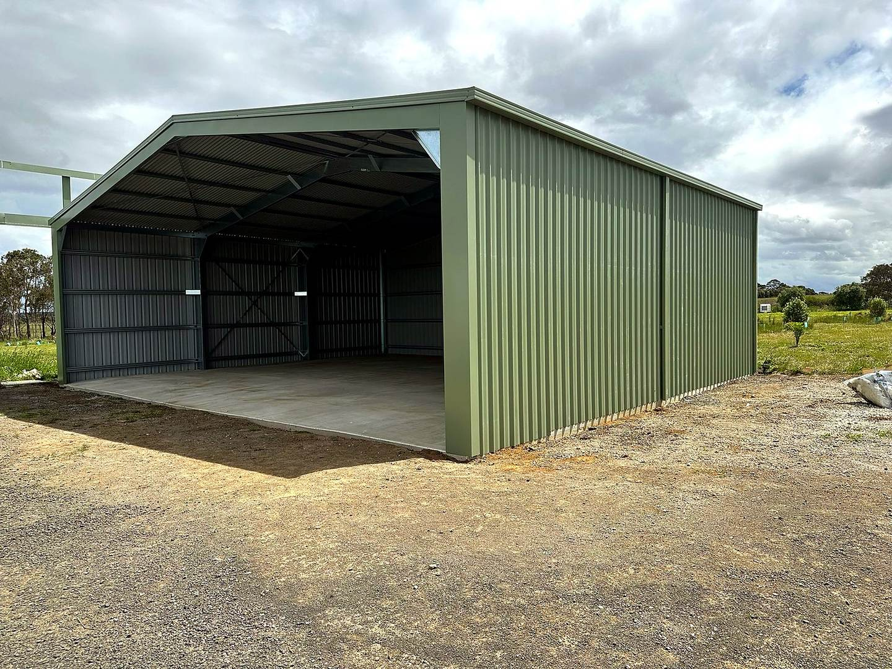

Shed project
Open steel shed project in Manerim.
A large steel shed with open internal floor area, roller door access and practical rural-site presentation.
Request a shed quotation
Project scope
Large storage and workshop space with clear vehicle access.
This shed image was selected because it shows the finished cladding, entry opening and internal working area in one view. The web version has been cropped and enhanced to reduce rough foreground distractions while keeping the project context honest.
LocationManerim, Victoria.
Project typeLarge steel shed with roller door access.
Photo focusExterior cladding, open bay and internal floor area.